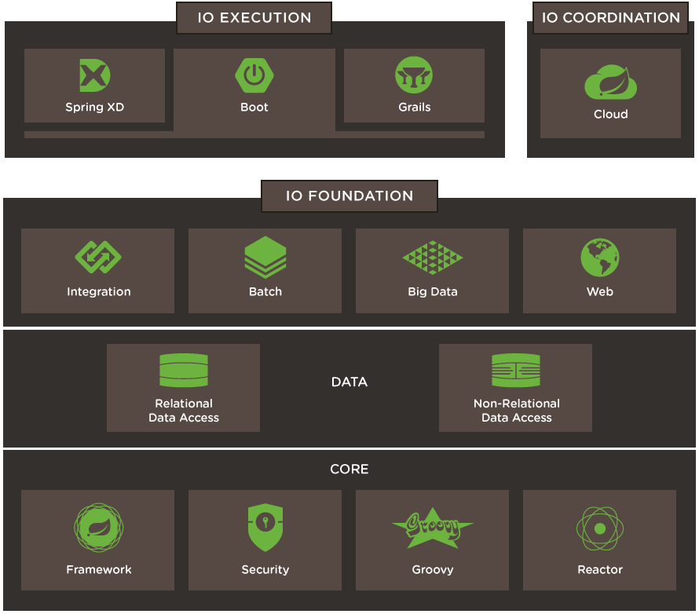

SpringBoot : The Missing Guide

What is Spring Boot?
Framework to build Spring based applications
What are challenges in learning SpringBoot?
- SpringBoot is a framework on top of frameworks
- SpringBoot is easy to get started, but hard to master
- It's too much magic for those who are not familiar with underlying technologies
- Overwhelming for beginners
- "It works, but I don't know how" - Problem
Why I am creating this course?
- Explain in a "Beginner Friendly" way
- Explain "How it works", not just "How to use"
Getting Started with Spring Boot
- Spring Initializer - https://start.spring.io/
- Intellij IDEA Ultimate
- Eclipse - Spring Tools
- NetBeans IDE
- VS Code
What you need to know before starting with SpringBoot
- SpringBoot History
- Concepts:
- Programming to Interfaces
- Loose Coupling
- Design Patterns:
- Dependency Injection/IOC
- Front Controller
- Template
- Proxy
SpringBoot History
- J2EE
- Spring:
- XML
- Annotations
- JavaConfig
- Complex, Repetitive boilerplate config
- SpringBoot Inspired by:
- Rails
- Dropwizard
- any may be others too...
Concepts
- Programming to Interfaces
- Loose Coupling
Design Patterns
- Dependency Injection/IOC
- Front Controller
- Template
- Proxy
Concepts
- Dependency Injection / IOC
- Programming to Interfaces
- Loose Coupling
SpringBoot Core Features
- Dependency Management
- Auto Configuration
- Embedded Server Support